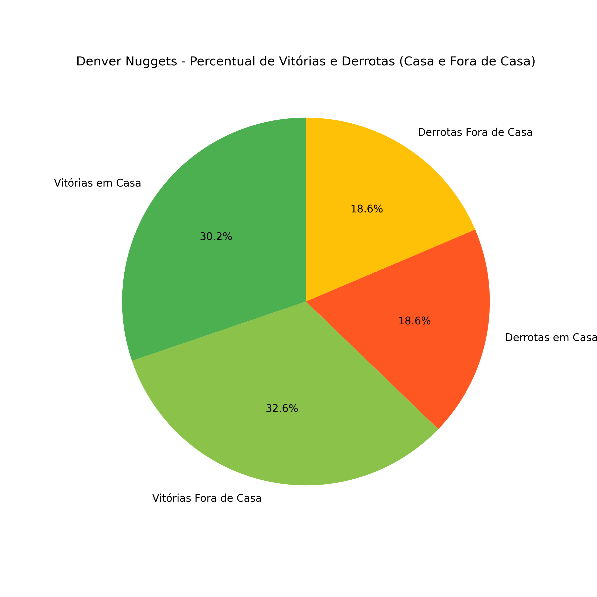

Parte 1
Gráfico de Barras Empilhado para Vitórias [Cor verde] e Derrotas [Cor vermelha]
Gráfico de Barras Agrupado para Vitórias em casa [Cor verde], Vitórias fora de casa [Cor azul], Derrotas em casa [Cor vermelha] e Derrotas fora de casa [Cor marrom].

Gráfico Histograma para exibir a frequência de vitórias e derrotas do time.
Gráfico de Setor [Pizza] para o percentual de para Vitórias em casa, Vitórias fora de casa, Derrotas em casa e Derrotas fora de casa.
Gráfico de Radar exibindo a média de pontos marcados e sofridos nos jogos em casa e fora de casa.

Gráfico de Linhas exibindo a sequência de vitórias e derrotas ao longo da temporada.

Gráfico de Dispersão exibindo equipes e a média de pontos marcados e sofridos durante a temporada

Gráfico de Pizza referentes a Tabela 5, RF6 - Temporada Atual

Gráfico de Pizza referentes a Tabela 5, RF6 - Temporada Passada

Gráfico de Pizza referentes a Tabela 6, RF7 - Temporada atual

Gráfico de Pizza referentes a Tabela 6, RF7 - Temporada Passada
Parte 2
Gráfico de distribuição de pontos por jogo em relação a média, mediana e moda


Gráfico BOX PLOT de pontos, rebotes e assistências por jogo [detalhar todas as informações (Max, Min, Mediana, Outliers, etc.) possíveis nos quartis]


Parte 3
Probabilidades de ocorrência de pontuação, assistências e rebotes máximos e mínimos - Nikola Jokić


Probabilidades de ocorrência de pontuação, assistências e rebotes máximos e mínimos - Michael Porter Jr.


Probabilidades de ocorrência de pontuação, assistências e rebotes máximos e mínimos - Jamal Murray


Matriz de confusão das estatísticas acima da média (dos 3 jogadores) - Regressão linear


Gráficos de probabilidade (histogramas de distribuição - real vs previsto) - Regressão linear


Curva ROC - Regressão linear